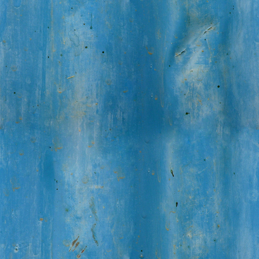

DUKE GREENE IS BLOGGING DEV BOOTCAMP
In Which Homework Incites In-Site Insight

I Want the Div to Go to There!
A Walk on the Client Side
Looping in Ruby
Staying Classy - Initializing with Instance Variables
Inheritance and Composition
The Artist Has Prepared a Statement...
Testing, Take the Wheel
Fail Safe - Reflections on DBC Culture
Thoughts on Thinking, Meditations on Mindset
Refactoring Racism - Meritocracy and Diversity in Tech
A.S.K. Not What Your Pair Can Do For You...
No, I Don't Play Football.
Remembering What Counts
Southbound and Down - Conflict and Avoidance
Week 9 Cultural Blog